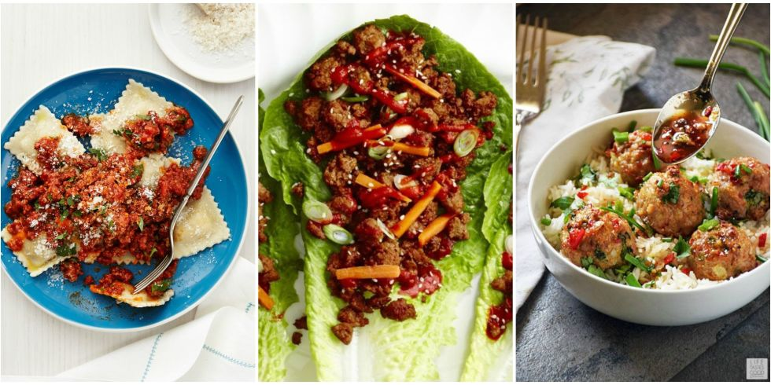

Know the type of HTML element by clicking anywhere on the page!!.
The easiest delicious food to prepare is this!
I have passion in cooking various kinds of food. Fish-stew is just one of my delicious diet i have ever made. It is not an easy task hence worthy of appreciation. The origin of this recipe is Africa in Kenya. Most people at the lake and river areas are great fish eaters. There are many ways of preparing fish. However for the start, it is recommendeble to get used to one way before trying the next method. Be my guest as i make this delicious,most loved African fish-stew!!